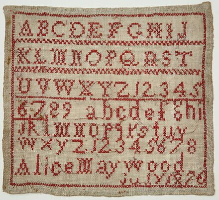
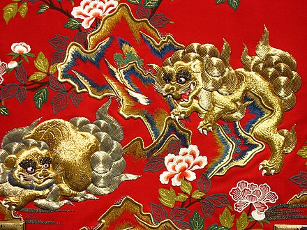
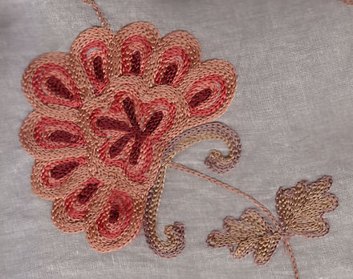
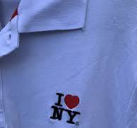

Embroidery is the craft of decorating fabric or other materials using a needle to apply thread or yarn. Embroidery may also incorporate other materials such as pearls, beads, quills, and sequins. In modern days, embroidery is usually seen on caps, hats, coats, overlays, blankets, dress shirts, denim, dresses, stockings, scarfs, and golf shirts. Embroidery is available in a wide variety of thread or yarn colour. It is often used to personalize gifts or clothing items.
Some of the basic techniques or stitches of the earliest embroidery are chain stitch, buttonhole or blanket stitch, running stitch, satin stitch, and cross stitch.[1] Those stitches remain the fundamental techniques of hand embroidery today.
The process used to tailor, patch, mend and reinforce cloth fostered the development of sewing techniques, and the decorative possibilities of sewing led to the art of embroidery.[2] Indeed, the remarkable stability of basic embroidery stitches has been noted:
It is a striking fact that in the development of embroidery ... there are no changes of materials or techniques which can be felt or interpreted as advances from a primitive to a later, more refined stage. On the other hand, we often find in early works a technical accomplishment and high standard of craftsmanship rarely attained in later times.[3]
The art of embroidery has been found worldwide and several early examples have been found. Works in China have been dated to the Warring States period (5th–3rd century BC).[4] In a garment from Migration period Sweden, roughly 300–700 AD, the edges of bands of trimming are reinforced with running stitch, back stitch, stem stitch, tailor's buttonhole stitch, and Whip stitch, but it is uncertain whether this work simply reinforced the seams or should be interpreted as decorative embroidery.[5]
Depending on time, location and materials available, embroidery could be the domain of a few experts or a widespread, popular technique. This flexibility led to a variety of works, from the royal to the mundane. Examples of high status items include elaborately embroidered clothing, religious objects, and household items often were seen as a mark of wealth and status.
In medieval England, Opus Anglicanum, a technique used by professional workshops and guilds in medieval England,[6] was used to embellish textiles used in church rituals. In 16th century England, some books, usually bibles or other religious texts, had embroidered bindings. The Bodleian Library in Oxford contains one presented to Queen Elizabeth I in 1583. It also owns a copy of The Epistles of Saint Paul, whose cover was reputedly embroidered by the Queen.[7]
In 18th-century England and its colonies, with the rise of the merchant class and the wider availability of luxury materials, rich embroideries began to appear in a secular context. These embroideries took the form of items displayed private homes of well-to-do citizens, as opposed to a church or royal setting. Even so, the embroideries themselves may still have had religious themes. Samplers employing fine silks were produced by the daughters of wealthy families. Embroidery was a skill marking a girl's path into womanhood as well as conveying rank and social standing.[8]
Embroidery can be classified according to what degree the design takes into account the nature of the base material and by the relationship of stitch placement to the fabric. The main categories are free or surface embroidery, counted-thread embroidery, and needlepoint or canvas work.
In free or surface embroidery, designs are applied without regard to the weave of the underlying fabric. Examples include crewel and traditional Chinese and Japanese embroidery.
Counted-thread embroidery patterns are created by making stitches over a predetermined number of threads in the foundation fabric. Counted-thread embroidery is more easily worked on an even-weave foundation fabric such as embroidery canvas, aida cloth, or specially woven cotton and linen fabrics. Examples include cross-stitch and some forms of blackwork embroidery.
While similar to counted thread in regards to technique, in canvas work or needlepoint, threads are stitched through a fabric mesh to create a dense pattern that completely covers the foundation fabric.[16] Examples of canvas work include bargello and Berlin wool work.
Embroidery can also be classified by the similarity of its appearance. In drawn thread work and cutwork, the foundation fabric is deformed or cut away to create holes that are then embellished with embroidery, often with thread in the same color as the foundation fabric. When created with white thread on white linen or cotton, this work is collectively referred to as whitework.[17] However, whitework can either be counted or free. Hardanger embroidery is a counted embroidery and the designs are often geometric.[18] Conversely, styles such as Broderie anglaise are similar to free embroidery, with floral or abstract designs that are not dependent on the weave of the fabric.
A needle is the main stitching tool in embroidery, and comes in various sizes and types.[27] The fabrics and yarns used in traditional embroidery vary from place to place. Wool, linen, and silk have been in use for thousands of years for both fabric and yarn. Today, embroidery thread is manufactured in cotton, rayon, and novelty yarns as well as in traditional wool, linen, and silk. Ribbon embroidery uses narrow ribbon in silk or silk/organza blend ribbon, most commonly to create floral motifs.
Surface embroidery techniques such as chain stitch and couching or laid-work are the most economical of expensive yarns; couching is generally used for goldwork. Canvas work techniques, in which large amounts of yarn are buried on the back of the work, use more materials but provide a sturdier and more substantial finished textile.
In both canvas work and surface embroidery an embroidery hoop or frame can be used to stretch the material and ensure even stitching tension that prevents pattern distortion.[30] Modern canvas work tends to follow symmetrical counted stitching patterns with designs emerging from the repetition of one or just a few similar stitches in a variety of hues. In contrast, many forms of surface embroidery make use of a wide range of stitching patterns in a single piece of work.
The development of machine embroidery and its mass production came about in stages during the Industrial Revolution. The first embroidery machine was the hand embroidery machine, invented in France in 1832 by Josué Heilmann.[32] The next evolutionary step was the schiffli embroidery machine. The latter borrowed from the sewing machine and the Jacquard loom to fully automate its operation. The manufacture of machine-made embroideries in St. Gallen in eastern Switzerland flourished in the latter half of the 19th century.[33] Both St. Gallen, Switzerland and Plauen, Germany were important centers for machine embroidery and embroidery machine development. Many Swiss and Germans immigrated to Hudson county, New Jersey in the early twentieth century and developed a machine embroidery industry there. Shiffli machines have continued to evolve and are still used for industrial scale embroidery.
Contemporary embroidery is stitched with a computerized embroidery machine using patterns digitized with embroidery software. In machine embroidery, different types of "fills" add texture and design to the finished work. Machine embroidery is used to add logos and monograms to business shirts or jackets, gifts, and team apparel as well as to decorate household linens, draperies, and decorator fabrics that mimic the elaborate hand embroidery of the past.
Machine embroidery is most typically done with rayon thread, although polyester thread can also be used. Cotton thread, on the other hand, is prone to breaking and should be avoided if under 30 wt.
There has also been a development in free hand machine embroidery, new machines have been designed that allow for the user to create free-motion embroidery which has its place in textile arts, quilting, dressmaking, home furnishings and more. Users can use the embroidery software to digitize the digital embroidery designs. These digitized design are then transferred to the embroidery machine with the help of a flash drive and then the embroidery machine embroiders the selected design onto the fabric.
Since the late 2010s, there has been an exponential growth in the popularity of embroidering by hand. As a result of visual social media such as Pinterest and Instagram, artists are able to share their work more extensively, which has inspired younger generations to pick up needle and threads.
Contemporary embroidery artists believe hand embroidery has grown in popularity as a result of an increasing need for relaxation and digitally disconnecting practices.
Modern hand embroidery, as opposed to cross-stitching, is characterized by a more "liberal" approach, where stitches are more freely combined in unconventional ways to create various textures and designs.
Due to the resurgance of embroidery, it is taking the fashion realm by storm. Check out some of this seasons looks featuring hand embroidery!
Click hereSchiaparelli is a Paris based fashion haus known for their detailed embroidered designs. Feel free to scroll their website for amazing examples of high crafted pieces.
Click hereEmbroidery shows up in all forms. One of my favoirte pieces of embroidery I own is my I heart NYC shirt!
Check out more information on that
Click here